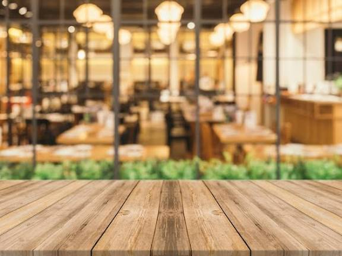
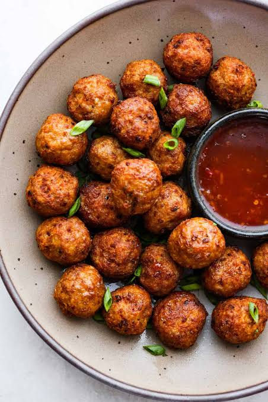
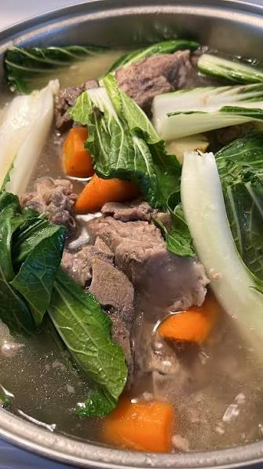
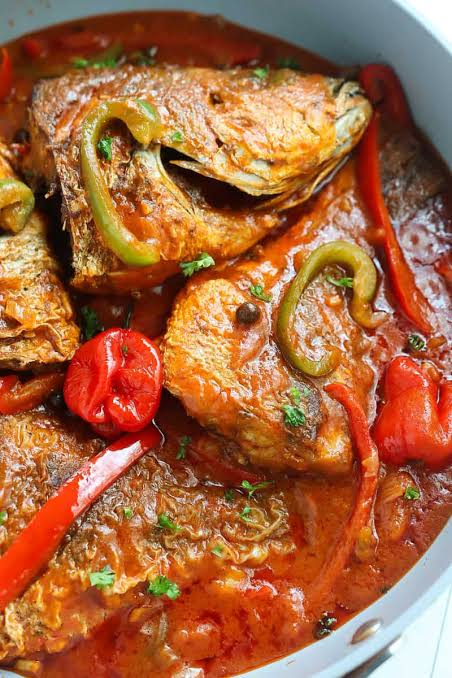

SAME'S RESTAURANT
Home
Event
Contact Us
Products
Authentic Cebuano Dishes
Tradition with a luxurious twist. Landscape photography and high-contrast plating to elevate each feature.

Lumpia

Bolabola

Nilat-an with Pork

Inun-unan
Close